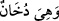
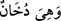

sayılabilecek karanlık bir durumda iken.. şeklindedir. Dolayısıyla bir teşbîh-i belîğ söz
konusudur. Dumana gök denilmesi ise sonunda öyle olacağı içindir.
Râgıb der ki: “(__WORD__) ifâdesi ‘gök dumana benzer bir halde iken’ demek olup
böylece göğün birbirine tutunmayan, araları boş bir şey olduğuna işâret edilmiş
olmaktadır.”
Âyette kendisinden duman olarak bahsedilen şey; -el-Havâşi’s-Sa’diyye’de de geçtiği
üzere- ya göğün maddesi olan heyûlâ ve cismî görüntü, ya da göğün kendisinden terkip
edildiği küçük parçacıklardır; yani şu, parçalanamayan parçalar atomlardır. Bunların
karanlık olması ise bir aydınlatıcının hulûl etmesinden evvelki bilinmez durumlarıdır.
İbnü’ş-Şeyh’in Havâşî’sinde de geçtiği üzere; göğün, ilk meydana gelişinde karanlık
olması sebebiyledir ki -gök, tıpkı duman gibi nurdan yoksun, birbirinden kopuk ve
dağınık parçacıklara benzetilerek- ‘duman’ diye adlandırılmıştır; çünkü dumanın da
terkîbini koruyan belli bir şekli yoktur.
Bazı müfessirlere göre de (__WORD__) ifâdesi, ‘gök; normal sulardan yükselen bir
duman iken’ anlamındadır ki bu göğün de duman şeklinde su buharı olduğu anlamına
gelir. Nitekim Kâşifî tefsirinde bu şekilde geçmektedir.
Rivâyete göre: Allah’ın ilk yarattığı şey su üzerindeki Arş’tır. Su ise yemyeşil veya
bembeyaz bir cevherden eriyerek bu hâli almıştır. Allah cevheri eritmiş; sonra da ona
bir ateş atmıştır. Böylece su, artığını atmaya başlamıştır ki Allah Arz’ı işte bu artıktan
yaratmıştır. Daha sonra, doğruca bu sudan oluşan dumana yönelmiş ve onu gök olarak
düzenlemiş; sonra da Arz’ı yaymıştır. Dolayısıyla Arz’ın yaratılması göğün
yaratılmasından daha önce iken, Arzın yayılması, dağların yerleştirilip rızıkların takdir
edilmesi, dağların, canlıların, denizlerin ve nehirlerin yaratılması, göğün
yaratılmasından sonradır. Cenab-ı Hakk’ın: “Ondan (yani gökten) sonra da Arz’ı
döşedi.” (en-Nâzi’ât 79/30) buyurmasının sebebi budur ki Abdullah b. Abbas da
Harûrî Nâfi b. Ezrak’ın bu husustaki sorusuna aynı cevabı vermiştir:
Suyu (köpüğü) yaydı ki bu iyi bir taban oldu.
Buharı da yükseltti, o da çok güzel bir tavandır.
O asılı tavandan onun güzelliği zâhir olur.
Bu tabaka haldeki yerde ise onun ince tedbîri görünür.
“Ona” yani göğe “ve” gerek kendisinin gerekse içindekilerin var olmasını takdir
eylediği “arza: “İster istemez buyruğuma gelin.”
‘Her birinize âid belli bir şekil ve vakitte oluşun, meydana gelin’ “dedi.” Demek ki
bu ifâde, -ortada ne emreden ne de emredilen olduğu halde, durumlarını takdir ettikten
sonra temsilî bir metodla- Allah’ın irâdesinin bunların var olmasına fiilî bir taallukla
taalluk etmesinden ibarettir. Tıpkı “ol”emrinde olduğu gibi, ki böylece O’nun kudretinin
gök ve yer üzerinde ne denli nüfuz ve tesire sahip bulunduğu, verdiği hüküm hemen